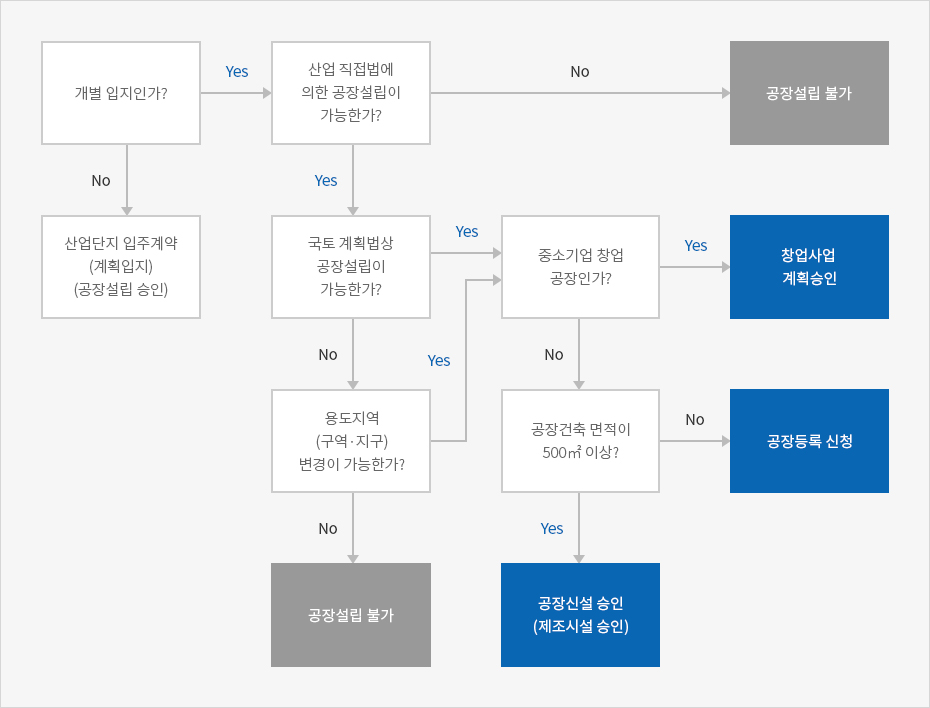

산업입지와 개별입지
- Home
- 경영·생활
- 공장설립
- 산업입지와 개별입지
제조업의 경우 제품생산을 위해 공장을 설립해야 하는데 입지에 따라 공장설립절차 및 인허가가 다르다. 개별입지에 공장을 설립하는 경우 인허가 절차가 복잡하나, 산업단지 같이 제조업을 원활히 할 수 있도록 조성된 특별지역은 공장설립 기간, 인허가 절차가 간소화 되어 있다. 특히 환경유해물질이 발생하지 않는 소규모 사업의 경우 공장등록 없이 제조업이 가능하다.
해당부지에 공장설립이 가능한지 토지이용제한, 공장건축 가능여부, 환경관련 규제 여부를 아래와 같이 검토해야 한다.



※ 출처 : 한국산업단지공단 (2018 산업입지요람)
산업입지와 개별입지
대한민국은 산업의 생산 및 활동공간을 효율적으로 확보하고 양호한 입지를 선정하기 위한 산업입지 정책을 추진하고 있으며, 체계적이고 계획적인 관리를 위해 정책적으로 공장을 산업단지에 설립하도록 권장하고있다. 그러나 사업상의 여건, 용지가격 등 각 기업의 개별적 사유로 인해 산업단지에 공장을 설립하는 것이 부적합한 경우에는 개별 부지를 매입하고 필요한 인 · 허가사항을 취득하여 공장 설립이 가능하다.
산업단지
산업단지는 산업시설과 근로자 및 이용자를 위한 지원시설을 집단적으로 설치하고자 포괄적 계획 하에 지정 · 개발한 지역으로, 기업들의 공장부지 확보를 돕고 산업의 집적을 통한 협력기업 및 인력 확보, 원활한 원자재 · 부품 공급 등의 편의를 제공한다. 최근 산업단지는 산학연 연계체계를 구축하고 다양한 지원시설을 연계 배치하는 등 복합개발을 지향하고 있다.
산업단지는 조성 목적에 따라 입지 유형이 다양하고, 공장설립과 관련한 업종 관리 방식도 개별입지와는 차이가 있다. 우선 같은 제조업이라 할지라도 입지별로 입주 가능한 업종이 다르고, 각각의 단지별로 운영 · 관리를 위한 규정이 다를 수 있다. 예를 들면 산업단지, 외국인투자지역(단지형)과 국가식품클러스터는 각 단지별 ‘관리기본계획’에 따라 입지를 운영하고 경제자유구역, 새만금지역, 연구개발특구 등은 각 개별법을 따른다. 자유무역지역의 경우「 자유무역 지역의 지정 및 운영에 관한 법률」에서 입주자격을 규정하고 있다.
개별입지
개별입지는 계획적으로 지정·개발된 지역 이외의 모든 지역을 의미한다. 따라서 기업의 개별적 사유로 인해 산업단지 외의 토지나 도시·주거지역의 건물을 매입 또는 임차했을 시, 직접 용도 변경에 대한 인허가를 취득하여 공장을 설립할 수 있다.
제조업종의 사업을 위해 개별입지를 선택할 경우「건축법 시행령」에 따른 건축물의 종류 중 공장 및 제2종근린생활시설(제조업소)에 입주가 가능하다. 하지만 전국의 토지는 「국토의 계획 및 이용에 관한 법률」에 의거하여 ‘용도지역’이 정해져 있고, 용도지역별로 행위가 제한되기 때문에 건축물을 신축할 계획이라면 「국토의 계획 및 이용에 관한 법률」 및 지방자치단체의 조례에서 규정한 건축물의 용도와 용도지역별 행위제한 사항을 먼저 확인해야 한다. 만약 공장 건축이 불가능한 용도지역일 경우 도시 · 군관리계획의 변경을 통해 용도지역으로 변경할 수 있으나 이를 위해 도시계획위원회의 심의 등을 거쳐야 한다. 용도지역별 가능업종은 「공장입지기준 고시」또는 「국토의 계획 및 이용에 관한 법률 시행령」별표 참조
산업단지와 개별입지의 장 · 단점
| 구분 | 산업단지 | 개별입지 |
|---|---|---|
| 장점 |
|
|
| 단점 |
|
|